从年负债19万，到眼光敏锐投资年净收益近百万
来源：https://wiizueiq5ks.feishu.cn/docx/NsZwdMgSxovqfxxgJqFc5XtXntb
- 大家好，我是老吴。一个金融从业者，原某商业股份银行的一个网点小领导。熟悉金融行业的零售产品业务。17年开始从事副业。我的第一份副业是做股票经纪人。现在也在做。之前虽然是一个金融从业人员，其实收入也就比打工的好那么一些。这些年，买房、买车、结婚。生娃、装修。真的是钱所剩无几。其实也是过着紧巴巴的。关键银行任务还一直很重。至于我现在的状态，我就不多复述。
- 最近看到一篇亦仁主动分享的文章中有一段对我内心触碰很大：对绝大部分人来说，这辈子，能抓住一个机会就够逆袭了，特别优秀的人可能可以抓到两个，甚至三个。但并不是每个风口都需要跟的，并不是每个机会都要去抓的，而且，并不是每个被鼓吹的机会都是机会的。我们的焦虑感也要适当性的控制。
- 赚钱方法千千万，而财富无止境，我只想弱水三千只取一瓢。
赚钱之前先武装脑袋
相信你们身边也有例子也看了很多例子，很多人有抓住了风口，但更多的人是凭运气赚的钱凭实力亏回去。所以我自时刻提醒和反思的几个投资要素和把我平常赚钱要养成的几个习惯分享给大家：
1、记账
- 我其实很感谢叫我养成这个习惯的朋友。他跟我说，记账能让你更了解自己的财务体系，掌控自己人生。我是从19年开始记账的。养成这个习惯花了一个月的时间。后面就很顺其自然的每天习惯记账了。到现在也是每天都记账，甚至我都把我每天记账分享到我星球每日生财里面，鼓励更多的人开始记账。
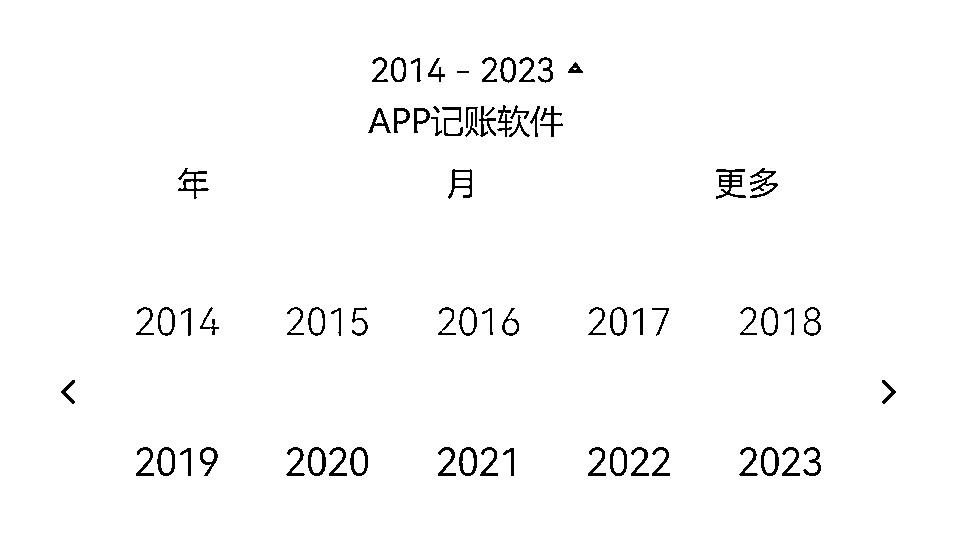
- 记账技巧：我个人使用的记账工具是：挖财记账APP。缺点:每次进去要等几秒钟广告。
- 方法：记流水账就行，每笔的一进一出。不用设置多账户。一个账户就行，特别事情做好备注。
- 我个人设置的收入类别：淘宝客、存款、利息收入、股票佣金、股票、会员收入、其他收入
- 我个人设置的支持类别：家庭开支、存款、淘宝客、小恩小惠、人工支出、工作室、日常请客
你做账不用特地去管进出项符不符合逻辑，你只要管你的进款出款，对的上你的流水即可。后台自动会产生报表。
每当你要去计算你每个项目赚多少钱或者花多少钱时，对照每个项目的前后出入逻辑就能测算出来。
记账能让你很适合开源节流，让你有个清晰的知道在哪个项目比较赚钱，哪个地方多花钱。不需要多复杂的技巧。
2、投资前，先进行亏损值收入性测算及实操办法
我自我测算公式是
第一阶段：
测算可承受最大的风险系数：可能性最大亏损金额<平均月收入*12。举个例子：我想投淘宝客，我月收入2-3万，那么我一年可以投资24万---36万之间，这些是我一年能赚的钱，而且这笔钱我可以分12个月投或者6个月投，间歇性的投资，是风控的一个手段。而且可以用复利进行去投资，比如我投了30万，中间却产生了20万的利润，那么我用这个20万继续复投。然后看停止时间后，每月产出值再减去成本=净利润。我们要看一个利润值的回报周期。
第二阶段：
如果收入还不错，那么步入第二阶段的方向。我的投资最大亏损金额=身家（不含房子）*20%。比如我有200-300万，那么我就愿意投40-60万去这个项目全亏的情况，可以适当放一些杠杆上去，一半最好就2倍以内，比如这个项目你算下数字，万一你亏到这个具体的30万-40万之间，把项目马上转卖，起码还能留些底。所以好项目要加杠杆，流动性要考虑，投资的这个项目我可以迅速变现，要求即使亏一些出售也有市场需求能接走，那么可以适当加杠杆。
我投股票这个项目就是用了一些杠杆，比如我愿意承受20%亏损，但我的部分钱又在其它地方，那么我就用银行资金增加投资金额，那么100万我愿意承受15万-20万亏损，要是没破这个亏损，那么我就继续留存投资。破了一定立马走人。不要再去额外承受波动
第三阶段了：
今年开始步入第三个阶段了，虽然刚起步。
最近听到一句话，穷人拆台、富人补台、智者搭台，我觉得这句话很有道理。虽然我现在还不是富人，但不妨碍我们搭个台。第三阶段，我将按照标准普尔去投资了，然后就是要搭个利他型的平台，大家一起聊项目，聊方法。好的投资就是利用人脉省钱，钱生钱。我们更欢迎一些投资者一起畅聊投资的方向和奥秘，格局做大。一起聊聊一些各自投资的经验和细节。
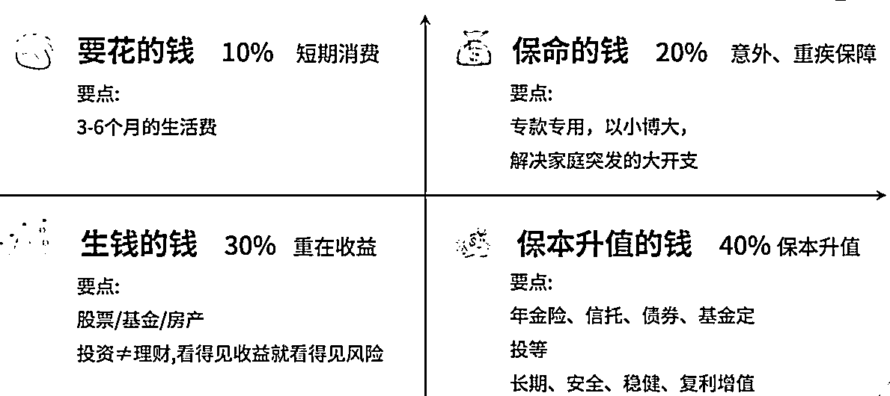
3、投资前的注意点和反思
资金的流动性，这一条，一定要牢牢控制住。你可以不投资，但手头一定要有临时备用的资金或者生意资金掌握在自己手里。那么我个人的投资生意的逻辑如下：
投资注意第一条，项目财务牢牢把控
投资别人10个有7个亏，但你会发现投资时自己能掌控财务状况，只要不是赌性太强，赚钱的可能性还是比较强的。所以财务状况不一定通过你的卡，但你要随时能观察和掌控。比如APP财务记账软件是可以同时登录的，甚至银行APP也是双人登录的，每个银行APP设置中有一个授权功能。很多人都有私心，能做到财务百分百公开的是少之又少，虽然往往这类人未来能成事，但我们很难遇到这种格局大的人，所以还是一半小人一半君子。
投资注意第二条，银行授信要备足
很多人光想着赚钱了，但很少人会提及想着我要怎么合理用银行的钱生钱或者钱该怎么用。因为我是金融出身，所以对金融各个体系的状况都很了解，这里很多人其实是电商类群体，然后比如支付宝、微信、百度、美团、滴滴、360等老是给你推这些乱七八糟的贷款，你觉得用一小段时间也没事，很多人是金融小白，对这些利息测算法也不知道，觉得生意能赚钱就行。那么我举个例子，微信微粒贷支付宝网商贷10.95%的利率，1万1天是3块钱，而银行现在利率最低可以到3.5%，1天1万块钱9毛6。差了3倍。普通银行信用贷利息也差不多3.85%-6%左右。而且现在的都是用多少算多少利息，不用就还进去，很方便。利息差就摆在那边了！其实很多人不知道怎么做，平常比较懒去问。万一你想投资，急用钱，那么就不用那么捉急了。我自己备用了几百万放着，随时要用随时可以用。
- 存银行再找银行借钱：如果你的资金比较充裕，那么你可以买银行大额存款，利息往往在3.1-3.5%左右，四大银行贷款利息大概在3.6%左右，所以你可以钱先存着。用房产抵押贷款，或者存单抵押贷款也可以。用银行的随借随还额度，一个就是你的流动性不会紧张，另外一个好处就是你口袋里少点钱，你也就减少花费。必要担心银行赚走你的钱，微负债是你赚钱的好办法之一，因为你一有赚到钱你就可以马上还，需要用钱可以马上用。总体肯定赚的更多。
- 抵押贷款近期可以找光大、建行、工行等，我知道的我们附近光大利率3.45%年化，可以做10年期自助循环贷款。工行建行也有十年期。我的抵押贷款在建行，10年期授信，授信额度116万，因为还有收款码配合，所以银行又给了我54万的信用额度。利息银行间都很便宜。也可以找交通银行，因为他们给的额度可以直接放自己卡里，很适合不方便资金放款到别人卡里的老板。
- 有开通企业可以配合国家交税一点点，指不定流水贷或者纳税贷能给你一笔。你要是个体工商户可以多多配合办一些收款码，走走流水，有时候经常有收款码信用贷额度。
- 有些银行你要找他们贷款（抵押类贷款），他们有时候在推推拖拖的，有时候是工作量太大了，没办法及时做，有时候是他们不认识你，没把你放心上，或者嫌弃你的资质。那么一个小技巧就是：主动告诉他们贷款下来了我可以配合买一点保险。5000元。交3年，后面就能取出来，你不取出来还会有一些利息。或者基金买个几千块钱完成个他们的基金任务也行。2000元。反正钱不会没掉，你就当少点利息。因为银行都有保险任务，但有的又不敢乱讲，怕被举报。所以你主动表达善意，再及时跟进，可能效果会更好一些。你多点配合，再稍微熟络以后，送点小茶点或者小水果什么，这个比请他们吃饭更有效。银行客户经理人都是一堆苦逼，很多人不差贷款业绩。他们最反感的是你跟他们讲其他行怎么怎么好，最感动的是别人体谅他们的辛苦，还能时刻送点小温暖。不费钱，真的。真诚一点效果更好。
- 信用类贷款公司最好注册地址跟你实际经营地址一致，你只要贷成功一次，后续维护好关系，下次续贷的可能性会更高。如果你家里人有公职类的有公积金的，那么真正薅羊毛额度可以薅出一百多万出来。
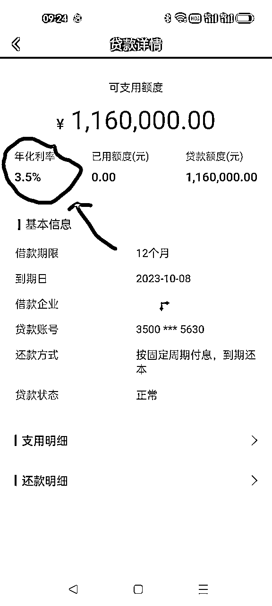
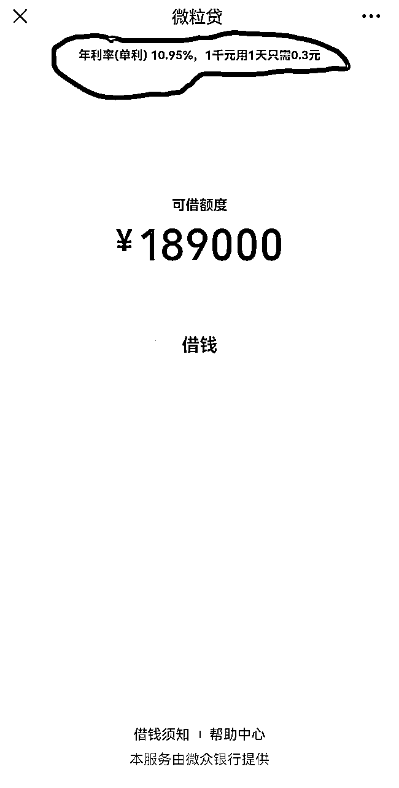
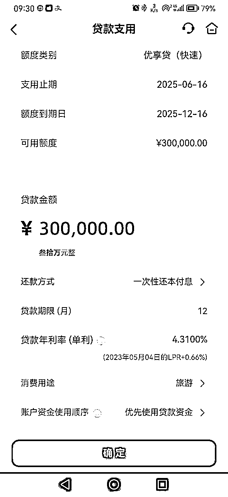
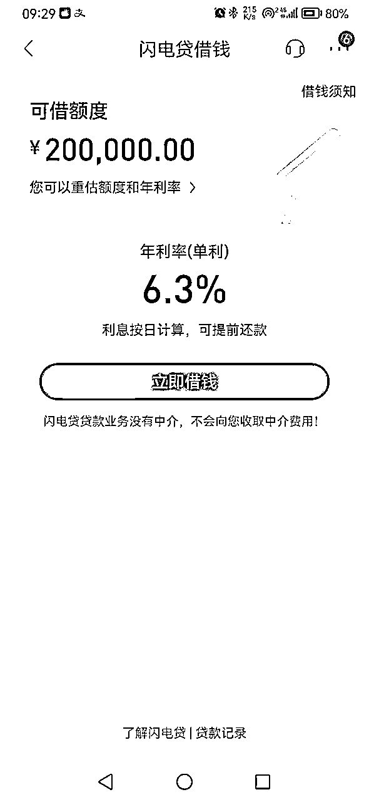
投资注意第三条，后路要想好
想想后路，最坏的情况你能承受怎么样的。那些逍遥自在的大佬们，肯定错过过一些好的项目，一些优质的投资机会，但这重要么？他们核心业务只要继续发展，就不重要。而往往都想往风口上赶的人，到后面灰头土脸。投资是很忌讳梭哈的，10次投资你9次成功，但只要一次失败，就会让你万劫不复，就像乐视的贾跃亭，回国遥遥无期。真正好的赛道，是风口来了你原来有沉淀，知道怎么做。风口走了，你还不至于摔下来摔死。一个好的行业肯定是有持续性的。最坏的打算就是投资失败祸不及家人。
准备后路好的技巧:
1、赚的钱买保单，买时容易出时难，把你生活的方方面面做好一个保障，包括养老，有钱人可以做信托。如果有人夫妻双方是债务共同担保人，怕成老赖。可以选择成年孩子或者父母作为购买人，自己的孩子作为受益人。
2、买房，适当轻负债。买房是一个好的储钱罐，进可以资产配置，退可以卖房贷款储备
3、有条件的买点黄金也好，保险柜要够硬。不要买钻石。乱世黄金盛世古董。
投资注意第四条，投资是投人
投资要投人，一个行业里面，有人亏钱有人赚钱。一个人能不能投，关键看两个字：靠谱。
怎么发现靠谱的人，我个人几个观点：
1、去夜场、外出吃饭、喝酒都懂得适可而止，理性的人。或者个人消费观不强。这种人有点没狐朋狗友的那种舒服感，但你和他创业投资，可能他就可以成功。切记，不良嗜好强的，比如爱赌博的人，千万别做合伙人。
2、凡是有交代，事事有回音，件件有落实。归类一点，执行力强的
3、不会很大方，甚至抠门的，但讲信誉的。
4、你看他身边朋友圈是什么类型的人。他可能就是什么类型的。
5、负责任，靠谱的人对自己的工作、生活和责任感到负责任。
6、沟通能力，靠谱的人具备良好的沟通能力，他们能够清晰地表达自己的观点，同时也善于倾听和理解别人的意见。
7、持续学习能力，在这个领域，遇到新的点，他会虚心请教。
前面这些仅仅是我个人的看法，当然，有人喜欢富贵险中求。但我奉承的投资理念就是一个字：稳。
我的投资收入版图
1）、实图案例
- 2019年开始投资，当年就负债19万，但我2019那一年大概收入20多万，也不怕，大不了一年白干，所以投资也心里不慌。2020年投资开始正收益，当年总结余22万，21年总结余95万，22年总结余93万。2023年1月到现在32万。解释一下，21年、22年分别买了一个车位，一个24万5，一个38万。还有日常买买保险。勉强也算百万收入了。但迈不了100万净收益，也算我的一个坎。
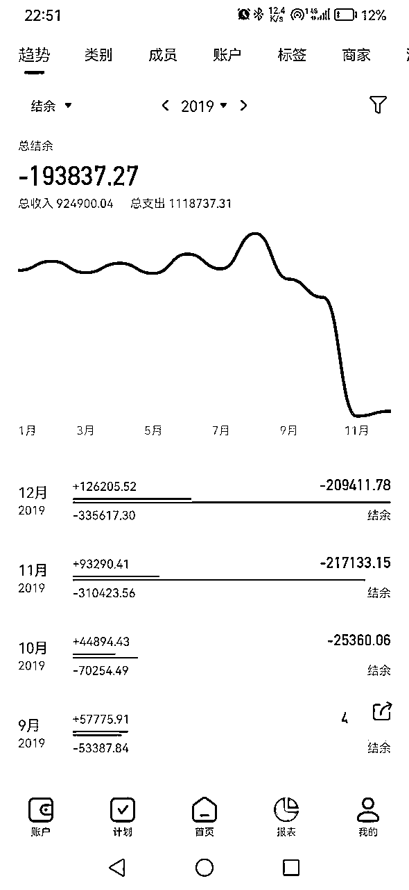
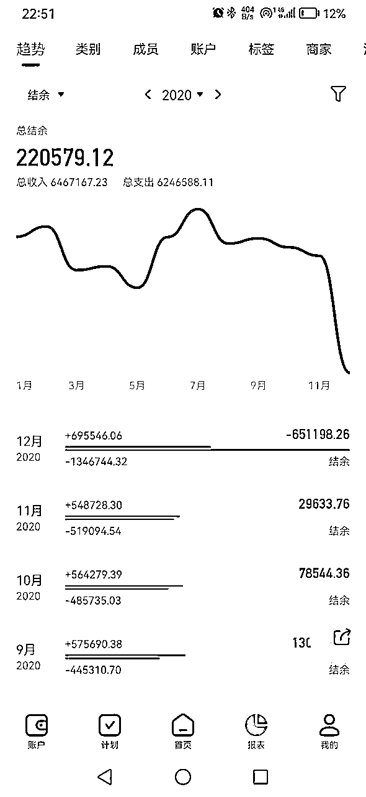
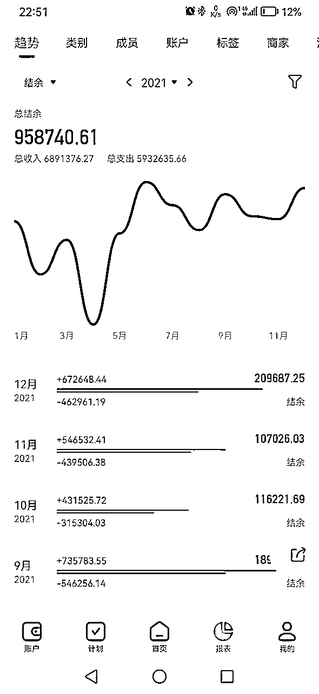
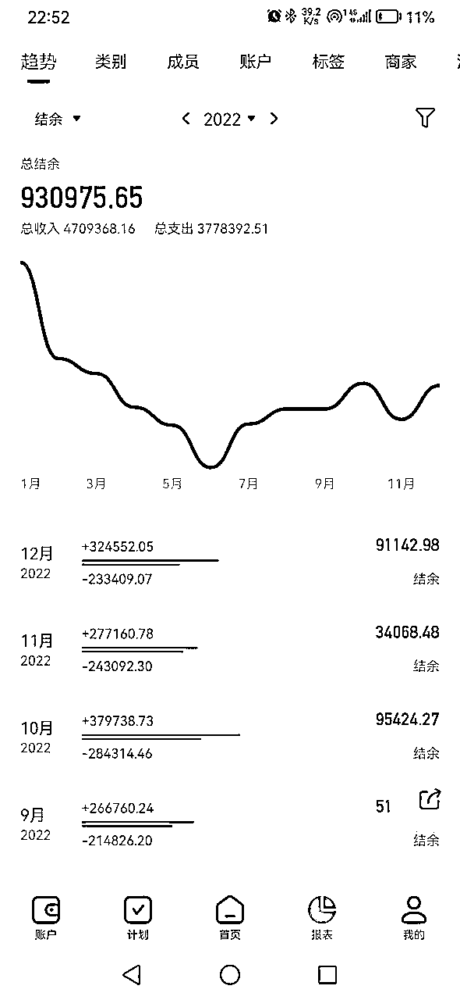
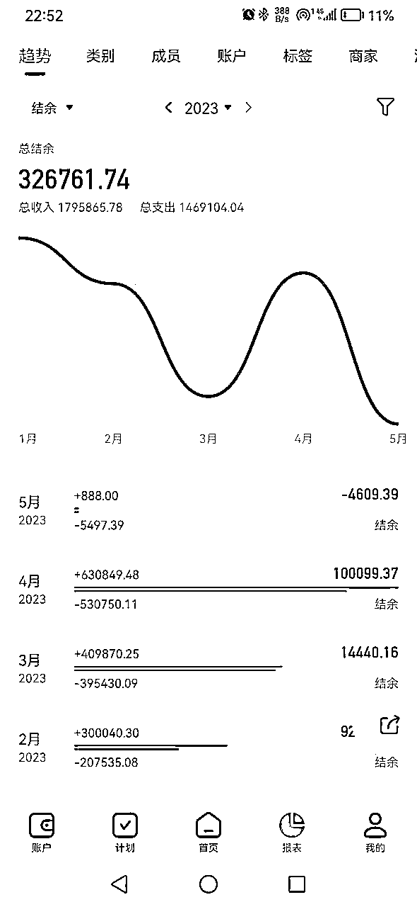
2）、第一份投资，也算副业。年入12-20万，以及像素及实操办法
- 我的第一份副业是股票经纪人，2017年开始做的。现在说下如何通过这个赚钱：
1、2023年5月8日又开放了证券资格考试，进去证券www.sac.net.cn/pxzx/pxzdydg就能报考，一科报名费61元，要过法律法规和基础知识两科。想要通过，买个帮考网APP软件或者淘宝买试题刷题，进行学习即可。刷题。
2、真正想要从事这块的，最好还是提前去证券公司预约，你可以提前去证券公司预约挂靠一个股票经纪人，只拿佣金抽成的那种，没有工资。他们整体也是比较乐意的，因为你相当于免费帮证券公司打工。注意点：你自己要是挂经纪人了，就不能股票开户了。之前股票户要全部销了。选择证券公司还是需要一定的小培训，比如佣金多少，开户怎么开，怎么抽成，抽成比例多少。达不到什么条件会解约等，都要分享。
3、客户群体哪里来：刚开始我也迷茫，没啥客户群体，中间也是一度想放弃，还好坚持了下来。不然就没我后面很多故事了。万事开头难，你可以去百度贴吧引流，发一些股票截图，或者建立交流群的二维码，平常用小号刷一刷。然后你可以建一个小仓位股票轮动的实盘。只要能分享，就有机会，然后去公众号写一写文章，找人互推一下，你没有文章，可以找我要一些电子书籍，通过WPS导出WORD文档，逐段拆解，晚上进行群直播。然后通过同花顺的K线训练营，自己强化一下训练，进行技术性分享，你就知道股票一些技术性知识了。如果你自己有客户，维持不了一年两三百万的业绩支撑，怕未来没得挂，来加挂我这里也行，你拿走80%。
4、可以想着多找几个大户：我有替一些炒股大户承接股票账户存放，因为我们实行28开的分佣制度，他拿走80%佣金，我20%佣金结算给他。他什么都不用管，挂靠的兴业证券超短成交速度也比较快，适合那些需要快速成交的操盘手。所以大客户就这样跟了好多年。他也把他身边的朋友介绍给我。大客户的资源一年也能赚个5W左右。虽然他们也很有钱，但他们大钱要赚，小钱也要赚，但这些大户对我也是很放心，只要靠谱，多跟他们请教，他们的人脉圈子可能就受益无穷了。
5、这样下来我自己的客户加上大户配合，一年也能赚个十几万，行情好，二十万也有。这部分就是我的被动收入。我们现在这块也是有持续做的，另外的，因为税费问题，而且还多邀约了其他几个小伙，分别挂靠了另外两家券商。现在总共三家券商可以挂靠合作，都是自己人，掌控的住。也是秉承着利他的心思，有大佬这方面需求的时候也可以一起合作共赢。我们也有很多客户需要操盘手方面的资源。
我体会到的优点
- 正因为这个经纪人副业，让我主动跟一些大佬接洽，也是平常的靠谱和执行力到位，他们也开始带着我去投资，后面我发现一个小特点，很有钱人愿意带着别人赚钱的，但一点，你要能带的动。你带不动，别人总不能求着你跟他一起发财吧。别人提点的几句，你就要主动跟在别人后面学习，学习底层赚钱逻辑，如果你真的开窍了，往往就是赚钱的时候了。
- 因为有被动收入，让我各项的投资有了一定的底气，秉承着大不了我亏掉这些额外收入的心思。所以，你的主业副业被动收入，真的很关键。但这个就足足耗费了我好几年的精力，所以你的人生不要急，好好打磨自己的本事和做事能力。但要保持谦虚和学习的心，时代总会给你一些发财机遇的。
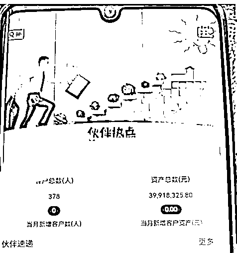
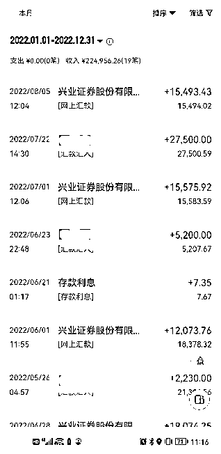
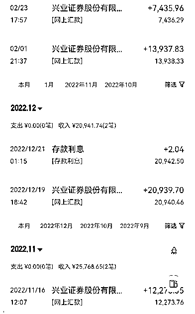
3）、第二份投资，股市，目前里面还有百万未分红。一年20-50万间（平均数）
- 承接第一份副业，我认识了我现在的朋友：股丰登。超短操盘手。2018年开始的投资。我们知道股市很多人都畏惧，我原来自己也炒过股，知道股市的风险。然后我平常就在后台观看股票他的股票交易记录，他也大大方方的告诉我炒股的一些底层逻辑。在投资前我是很谨慎的，反反复复把盈利测算，风险测算的方方面面均想清楚，但启动开始也是十分谨慎。那么我就小资金的30万去投资这个事情（也拉了几个朋友凑100万），资金在我自己的账户里面。平常买卖3层仓，剩余资金我平常还能做T+0理财。就这样，陆陆续续从股市赚到钱。所以炒股交给专业投资者是很有必要的。
- 通过了这个，我的本金也在慢慢增加，把我自己股市的盈利的钱拿出去给别人看，别人也更加的对我产生信任，因为股票赚钱的人确实不多。通过这个我赚够了面子。另外我也是小心翼翼谨慎投资，这个投资的逻辑就是我的本人增投的资金是按照：赚的钱*0.5=增资后最大投资亏损，然后最大投资亏损额度*5。我举个例子：我赚了40万，那么我可以承受20万的最大亏损。那么我可以投资100万，最大亏损20%。按照这个稳健投资方式，真亏了就撤了。没亏，就继续留着，我朋友也是比较稳健。没亏损超过15%，后面也都回来了。
- 股市没有最终落入口袋的时候，是不算收入。所以我们投入进去的本金一直都没进行折算。都在里面滚。只有真正分红到银行卡里的时候才算是收入。所以在股市里，我们本金还在滚，这部分就没做入账性收入了。
- 目前大概从股市里面赚了一百多万的样子。一年分红到手收入大概20-50万。一直在滚，还有没实际分红的百万放着里面滚了。
这个项目不建议你们参与，因为你们遇到操盘手的好坏你们是按照运气来的。
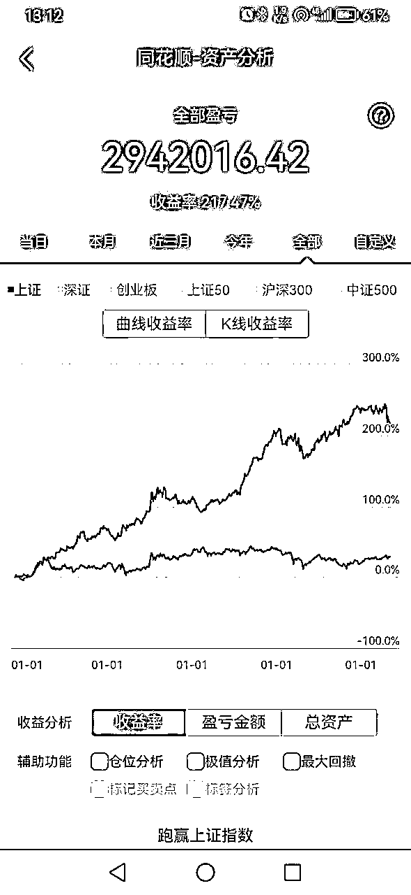
4）、我的最成功投资，淘宝系的淘宝客，总投资50万，年入50-70万
- 2018-2019年开始的淘宝客项目，敏锐的发觉这个在当时是一个大风口。第一次接触到这块的时候是我的初中同学。关系一直不错。后面其实也是相互需要，他一说这个事情，我就几乎放下我手头的事情，全力以赴做这个项目，后来我就成了他的合伙人之一。当时的淘宝客返利项目最大的缺点不是资金，而且返利号。我解释一下，什么是返利号，他其实是一个个人微信号，挂靠阿里云或者腾讯有服务器，服务器里面添加返利机器人。然后引流买的粉承载到这个微信里面进来。然后客户通过查券，我们的机器人会自动回复，大家下单后就会收到信息，等到确认收货就可以满3元提现了。大家可以体验一下。机器人会自动发送红包给你
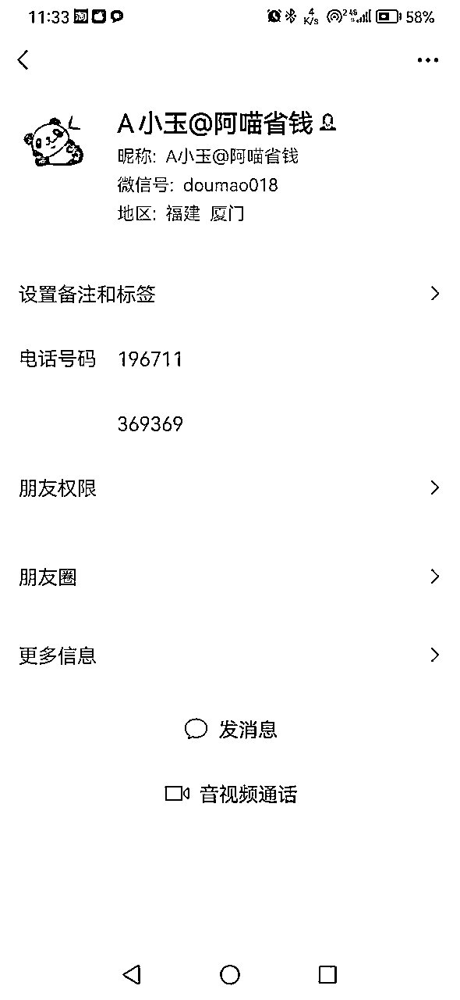
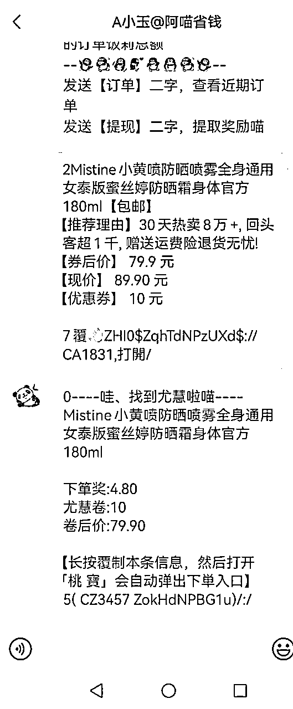
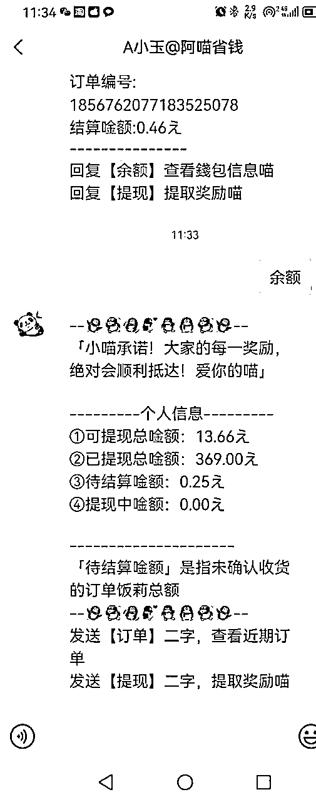
- 继续承接上个话题，这个项目的投资，这么好赚，买一大堆微信号去接粉不就行了。当时的环境管控的很严，大量粉丝引到微信，权重不够的微信号很容易就封了，也没那么多的实名制可以使用。所以衍生了合伙人制度，要求的微信号必须个人日常使用的个人号。
- 我同学跟我说起这个项目的时候。我觉得也刚开始天方夜谭，别人微信号怎么会给你使用。但后面我想想好像也不太对。这个是很香很香的项目。完全的被动式收入项目。他有自己的一套返利机器人系统。跟市面的完全避开，这也是我们投资这个最大优点之一，微信号防封性很强。
- 然后开干，找微信的这个我们也采取分发合伙人制度。微信号他们自己拿着，后台我们管，投资一起投资。整整半年时间，找了几十个微信号，购买了10几万私域粉丝。小微信号合伙人出钱出微信号，我们出钱出人管。合作共赢。19年底到20年初投资，2021年初就回本了，那年赚了70万左右。然后2022年50万的净利润。每年利润都会下滑一些。今年目前也在下滑。今年月平均净利润收益目前是4万左右。但这块被动的收入是我平均收益最大的一块。
- 其实我很感谢我的同学带我入行，但更感谢一起和我奋斗的合伙人，感谢他们的信任，我也不辜负他们所托。也要感谢我靠谱的行事风格和强大执行力。才让我有这个经历。回想起来，当时真的是为了找微信号的那种艰辛，才有现在的回甘。比如那时为了一个微信号和我伙伴跑了一百公里到他亲戚那边，谈了足足一个下午软磨硬泡。那时的辛酸确实难以忘怀。
小白像素级实操性办法，目前方法适合自产粉群体，批量买粉不划算：
1、去网上搜索悠哉官网http://www.uzaisoft.com/，购买返利机器人或者买悠哉ECO手机（不能息屏）。建议买腾讯云服务器挂机器人。
2、通过悠哉注册会员关联你的个人微信，挂靠服务器。
3、开通淘宝联盟和京东联盟高佣。开高佣方法去淘宝购买。
4、通过小红书、微博、知乎等平台，看你本事进行引粉，现在买粉渠道这块又贵，回本又慢，已经被整个市场淘汰掉了。所以你就自然产粉，虽然慢点，但一进来就是实打实的收益。然后教导客户如何使用返利功能。
5、也通过朋友圈，适当选品发。增加15%-30%佣金
6、这种产出慢，效果好在精细化运营，也是可以进行好的被动式收入。
7、测算了一下，你有3000个精准粉丝群体可以塞一个微信号，利润大概一年3-4万左右。因为会发生裂变。而且这种返利号人工管理时间成本非常低。号成熟了以后只要每天稍微瞄一下是否掉线以及每天晚上提现一下。
下图是我们的战绩情况，后台太多，就不一一发了。
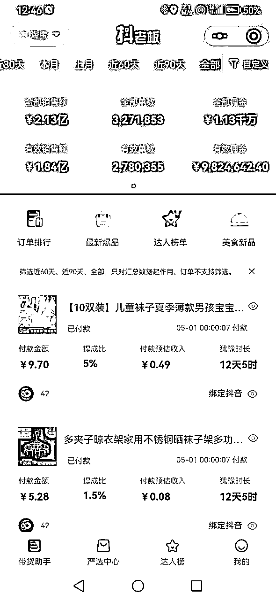
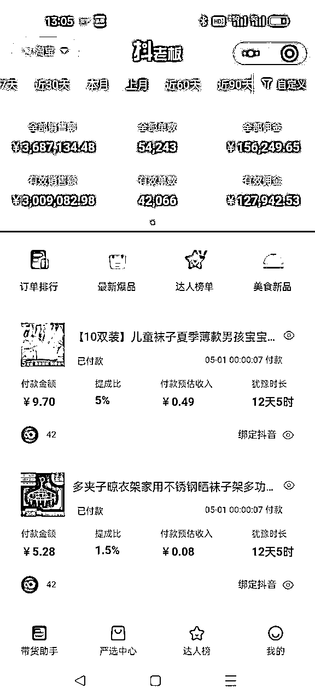
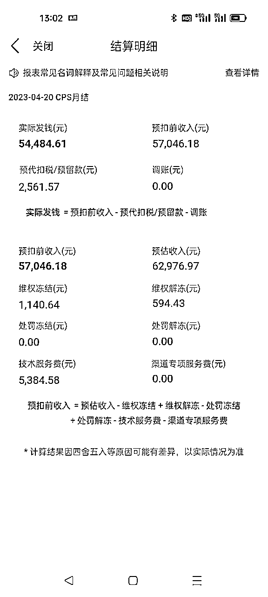
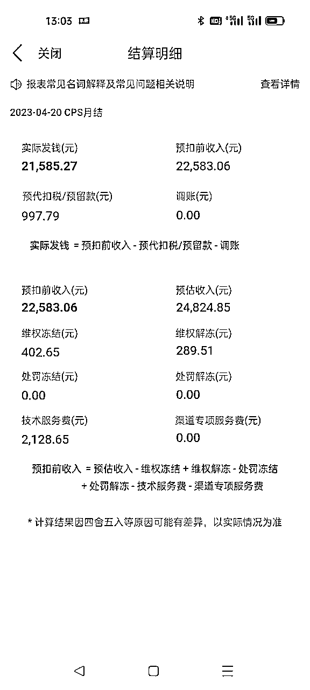
5、可转债打新，不用成本，年入6-10万
可转债打新是一个超低风险打新收益，身边的亲戚朋友等，一起来。还包括企业可转债户头。100个户在代打，收益分一半，包括自己家里人户头，利润都算在我头上，一个户一年收益1000-2000左右。最早期打新利润是真高。现在行情不好，降低了很多了。但每个月利润具体不一。也都坚持在打。反正小钱大钱我都看的上，主要这个业务没什么系统风险。
而且我们也测出了企业可转债打新的方案和新思路。不用2年交易经验和10万日均资产限制。就可以增加可转债项目，近期也打算把这块放大。做无货源或者企业店群的在这块是个好思路，店群既能开店，又能节省很多财务费用，一箭双雕。我们也愿意透露怎么操作，因为利他的东西总会给我们带来额外的收获。整个可转债市场那么大，也不差你一个。作为等价交换，你可以分享你一些行业经验和技巧给我们，或者小合作也行。那我们这个方案也就给你了。下面的是我上次在生财写得文章，大家可以先了解，具体开户需要的资料和信息和细节，欢迎交流。
可转债的商机和技巧办法
https://articles.zsxq.com/id_wwzu6cn1ewb7.html
6、四大行无风险套利，年入30万-不封顶
这个东西投资的是人脉投资，投资金额很难估算。最大的成本就是你的信用价值。这行业是一个非常小众的行业，我告诉了你方法，你也没那块资源。然后这块我和我合伙人老胡配合，门槛本身也比较高。我前年入行，和老胡（不是淘客的那个老胡，我合伙人老胡他也在咱们生财有术）一起做的，他负责他的人脉圈子里提供和寻找匹配银行需求资源，我负责高端客户资源。刚开始一年10几万，去年一年20万，今年第一季度赚20万了，单单季度底一天我就赚了10万，我觉得接下去再赚个20-30万应该可以。这东西就是一个完全利他的东西，客户在自己卡里就可以享受收益。接下去我能赚多少，靠的就是想要做存款的客户有多少了。那么我简要说几点：
- 需求端是银H的行长。比如，你任务完成2000万，你就能获得2万的奖金，没完成扣1万，来回3万，那刚好某个行长拉存款就拉到了剩下200万，但他不能向自己客户出这个嘴，只要他说了第一次，可能第二次他就要付钱了。所以他找我们花个成本2000-3000元左右，完成他的任务。对他来说也完成了任务，也赚到了奖金，划算。天下间赔本的买卖行长们也不做，对吧。这种叫考核信息差。
- 市场需求量很大。全国的各地四大银行、包括邮储银行。每到考核时点需求都很大。操作只需要在官方APP里面操作。
- 安全，这点是很关键的一点，所有的资金都是在自己名下银行卡内互转！不转给他人，不用买理财产品，随时可以快速赎回。这一点特别重要，不要轻信转给他人名下的任何理财或者高收益项目。再者，所有的操作都是自己独立在银行的手机APP完成，容易上手，前后不用10分钟操作就可以。不告诉我们手机号，没有验证码，就是自己存。存好了截屏告知一声做证明。然后按要求的那天就可以转出。不做小银行，比如什么村镇、农商行。你自己试想一下，小银行还可能搞一些幺蛾子。四大国有行有可能容忍自己的系统里面出这种漏洞么？
对于你来说的舒服级实操赚钱办法
（1）、自己有资金的可以做，前期你自己尝试配合教程开户一次，后面就销户了，然后整个流程你自己就熟悉了，有钱的转入转出几万块，没钱的转个几块钱也行。你再评判整个项目的可操作性。先尝试不亏。
（2）、你可以利用银行随借随还的办法，进行套利。有公积金的，或者有房产抵押的，均可以布局入场。像我，可以一下子搞出500万的银行额度。一年关键几天的净利润收益也有3万起。
注意：要适当跟银行搞好一点关系，切记不要违背他们的规则。不然是贷款会收回去的。稍微提前问一下我要怎么放款。提点小礼品，花不了几个小钱。你就说亲戚要存款。支持一下。都理解。
（3）、你身边的资源丰富，有资金，如果你自己没空，我们帮忙一起协调好了。该预留的部分我们会给你预留好。我也是要在生财里面混的，也要名声的哈，所以也提前会按约定做好利益分配。如果你会惧怕一些联系会对客户造成的问题，你可以找我要资源需求，我只跟你一个人对接，你负责教导好你的客户就行。我可以把实操方法毫无保留的教给你，也把我这的银行需求发给你，我把相对应的利润转给你，只要你靠谱就行。一起合作共赢也是可以的啦。
（4）、价格有实行阶梯价，如果你是财经博主，或者银行资源大户，或者银行授信大户，都欢迎来赚。一个有资源型大户，在我这边一年赚个几十万套利，完全是可以的。
- 具体的像素及实战手册我发在这里，大家有兴趣可以看一下:
7、说说踩过的坑，不能永远赚钱没失败对吧
- 股票踩坑，前面一个是我亲戚跟我说一个很厉害的操盘手，有一只消息票，让我去他一起做。凑个资金数。我抱着怀疑的心思尝试参与，投了10万在他账户，结果，我亲戚那个账户被拿过去做了接盘侠，一百多万的资金说没就没，而且是那种被180ETF绕标后的融资融券账户，撤都撤不了的那种，连续跌停卖都卖不出去。因为我没有账户的操作权。到后面完全清仓时，10万就剩下1万块钱了。这是我最大的坑之一。从此以后，怎么样都不碰融资融券。
- 我在投资淘宝客的时候我其中一个合伙人在做淘宝达人，因为这块我是不太懂。朋友跟我信誓旦旦说这个能赚钱，短期超级能赚钱。最近要抓住机会。咋地咋地。我那时候我看他跟着我做淘宝客做的还可以一点，那是刚好一天赚了5万块钱，就想着先把这个赚的钱转给他，应该想着最差的话，亏个一半也没事。结果，去了5万，过了几个月，一分钱没见着，1万9回来。找他要账务信息明细。他也给不出个所以然出来。如果你能跟我说个子丑寅卯来，我也就罢了。你很多的东西哪里亏了，钱去了哪里，亏在哪里。反正就是没看到钱。所以未来我的所有投资和生意版图，他就被我纳入黑名单了。以后再也不带了~！后面我就悟出了一个道理，投资一项东西，别人说的都靠不住，只有自己亲身参与一点，哪怕皮毛，也不至于被人忽悠。
- 这个亏损还是股票，亏了两万块钱。这个倒不是很心疼。但心疼我兄弟。我一个兄弟，说是从他朋友那里得来的消息，中天金融要跟华夏人寿进行收购重组。他自己借钱融资上杠杆，投资了三百多万。我想着我无聊，也玩玩这只股票，看看有没有这个重组的可能。结果，我严格设定止损线20%，我就及时出来了，我一直劝解他设定一个止损线，他也实在是不舍得割，结果一路往下，300多万现在只能下60多万，中天金融（现在叫*ST中天），股价0.63元，还即将退市预警，今天还跌停，如果他再不卖掉，可能退市后渣渣都没了。我那个可怜的朋友，当年一起奋斗，他却走上了梭哈的路。原来身家资产几百万，厦门一套房，现在是负债累累几百万，这次要上岸，估计下半辈子没碰到好机遇，只能慢慢当老赖，靠着还债过日子了。所以以后再也不碰消息票了。
- 投资外卖CPS和影票CPS，前后投了30万，现在已回本80%。目前每个月剩下利润3000元左右，目测还有20个月以上时间回本。目测平台太坑，饿了么、美团吃相太难看。以后都不会去碰这块。
我的感悟
1、我自己要靠谱，当执行力到位，当成功案例越来越多，我的能量圈就越来越大
- 因为我是我同学的公司现在体量也很大（现在淘客系全国前十），我是他们成功的淘宝客合伙人之一。虽然量不是最大的，但是单产最高的。当年我还在他们公司最为紧缺合作伙伴和返利号的时候，帮他们找了一一堆的合伙人，我一分钱没赚，但也得到了他们的投桃报李。他们一有需求和合作意向，都第一时间找我，但也是他们的每个投资要求的我都能一一执行到位。
- 可转债打新客户，很多的客户一开始的不信任，到后面的陆陆续续介绍客户给我，做的是细节，虽然小钱。但我也做好本分工作。在每次有新股新债都坚持打，而且给他们的中签率比他们自己打都还行，然后后续有很多的一些小合作他们也都很乐意配合。
- 存款冲量对于我们的高净值客户是一个非常好用的利器，我们的客户圈子也都是客户口碑一个个相传出来。这东西前期普通人难以理解。慢慢的熟悉后，这个圈子就会越来越大，所以存款冲量未来的伙伴会越来越多。信任度强了以后，你从他们身上就可以学习到非常多的你完全颠覆三观的认知思维。有钱人为什么会成为有钱人，是有道理的。
2、在我的赛道里，小钱要看的上，大钱也要赚
- 找准一个赛道深耕。要相信一切都是积累。突然间的爆发，一定是你的人生在实业的土壤里扎的根够稳。
- 赚钱也要做减法，原来我也很焦虑，很多好的风口项目都知道，都想做，比如无人直播项目、快团团、抖音小店、小红书种草、金融贷款中介等等。后面还是很多放弃掉了。我考虑投资的优先选择是能增加我的被动式收入。吴军老师在他的《见识》里面说到:把握住一个方向，往往能走得更长远。所以我反复一直思考利弊，最终还是决定把一些领域的事情做的更大更强。而对我来说，第三阶段确定的赛道就主做一件事：搭平台、利他的项目。
- 这个利他不是无条件让人白嫖，我也需要客单价高的人群，我也需要一个好的圈子，一个聊几句大家互相知道了默契的那种感觉。我们可以鸡毛换糖。但我做的事情一定不是要占你便宜的事情。所以只要是利他的事情，我都会适当考虑尝试。
- 我发现那些有钱人，小钱他们也赚，大钱他们也赚。有个老板告诉我，你在小钱里面能发现大商机。那时，我悟了！诀窍在于小钱复利放大！
- 赚钱看的是坚持。我会为了一件事情坚持两年三年，会为了交一个朋友或者一个新颖的观点，而跟他泡一个下午的茶。也会为了一个账户几百块钱坚持打一年的可转债。也会为了扩大人脉不断的跑来跑去。小钱汇集，才能成资金的江海。赚小钱不是抠门的表现，而是对自己的人生负责的态度。
3、做人要真诚
在生财里面，你会看到那些赚到钱的人往往是有格局的，他们做人真诚，不去为了蝇头小利而遮遮掩掩。没有道路通往真诚，真诚就是唯一的道路。多点付出，可能会有额外的回报。对待每一个客户、每一位伙伴，我们都会认真的对待每一份承诺。
比如合伙人分润这边，我一定会按约定好的比例分给你，甚至多给一些。比如存款客户存好了，有些小金额的会自己先垫钱给他。
一定要少点思考利己，多点思考利他。我不会做烂好人，但我会做一个真诚的好人。
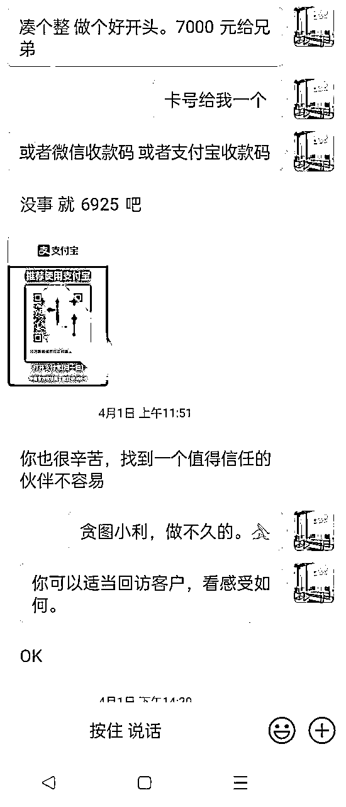
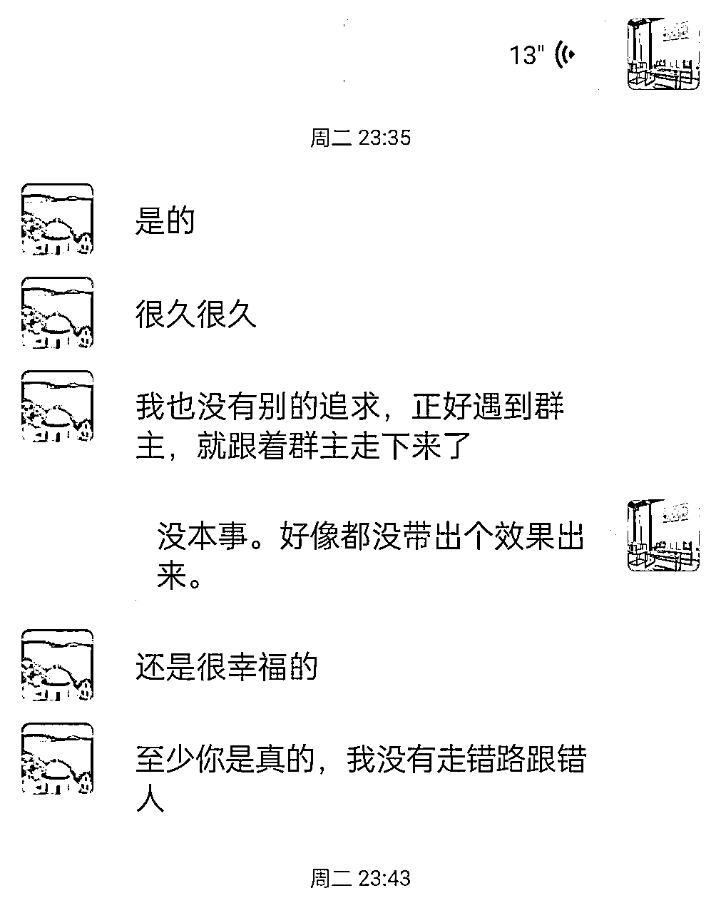
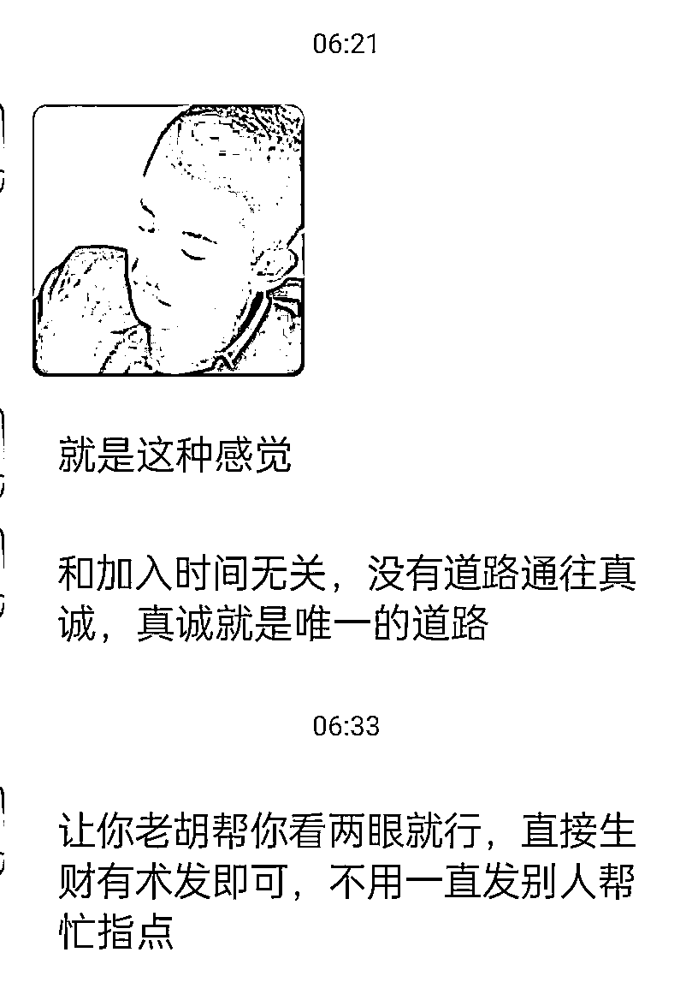
写在最后
生财的大伙们确实很多的很焦虑，觉得这个好，那个好。但最终还是要沉下心向最自己内心最深处的诉求，找到自己的优势点，并持续行动。
卢克文曾有段话让我感同身受：“贫穷像附骨之蛆一样折磨着我的家人，我的父母一辈子给贫穷做牛做马，不是他们不够勤劳，而是他们没有找到战胜贫穷的方法，今天，我还完了所有债务，终于可以轻装上阵跟你过招，我清楚明白，只有用知识才能战胜你，从现在开始，我一定会打败你，不会再让悲剧在我家人身上一代代重演。”
在这里，如果对你有帮助，希望生财评论区给个肯定，你的鼓励也是我写文章的动力。也希望大家都能找到战胜贫穷的方法，让身边人都能跟自己过上好日子。